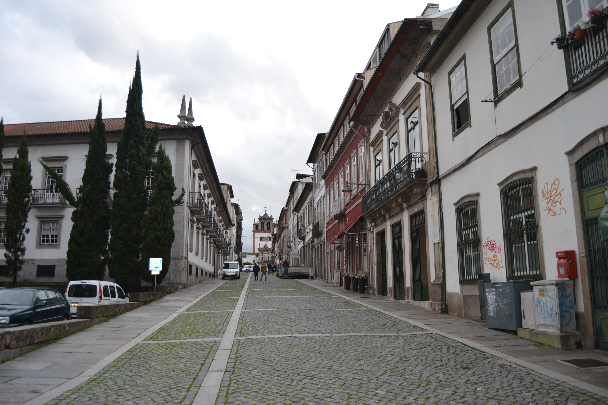
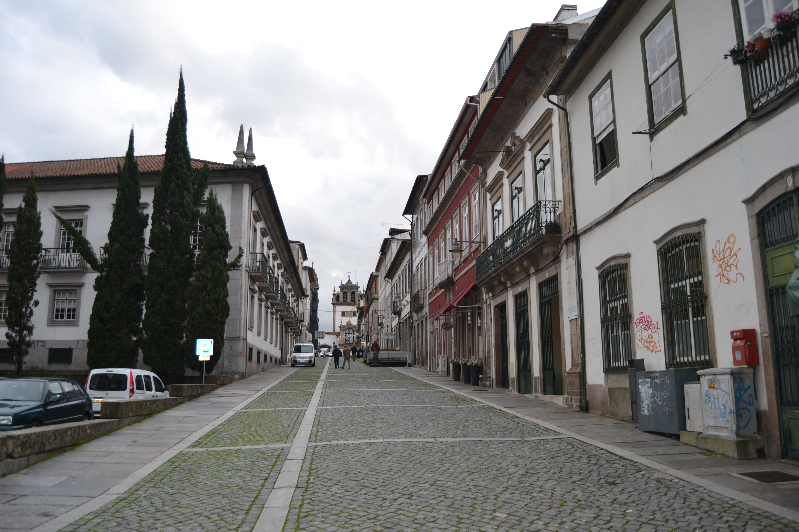

Rua de Sta. Maria ou do Poço - vista Nascente.

Rua de Sta. Maria ou do Poço - vista Poente.

Longa e importantíssima artéria que ligava a Catedral com o terreiro de S. Paulo ou de S. Tiago onde existia a principal porta da cidade virada a Sul, a Porta de S. Tiago, depois chamada do Colégio.
Rua de farta história foi um eixo fundamental da cidade, só deixando de o ser a partir da data em que o centro se mudou para o eixo rua do Souto-Arcada.
Na Idade Média era por aqui que se tinha acesso à feira que se fazia algures, junto à porta da muralha, no Terreiro de S. Tiago. Nela também talvez tivesse havido um mercado de forragens, pois foi conhecida, no séc. XIV, com o nome de rua da Erva.
No séc. XV, instalou-se em casa logo pegada à actual Igreja de Santiago, a Sinagoga, sendo arruada esta artéria aos judeus, por decisão do Senado; a rua passou então a ser conhecida como rua da Judiaria.
Em 1465, pelo menos, foi decidido mudar os judeus para uma rua que não ficasse tão próxima da Sé, pois causava má impressão haver tantas moradas de «casas de hereges» em local tão próximo da Catedral, ou Igreja de Santa Maria de Braga.
Começou então a ser conhecida por rua de Santa Maria e, também, por rua da Judiaria Velha.
Entretanto instalou-se no contíguo terreiro de S. Tiago o Colégio de S. Paulo, onde existiram os Estudos Gerais.
No séc. XVIII, tinha o nome de rua do Poço, que provinha de um poço municipal existente quase no extremo Noroeste desta artéria que serviu desde a Idade Média até ao séc. XIX. A metade Sul, além da rua das Travessas, foi também conhecida pelo nome de rua de S. Tiago.
Alargada em fins do séc. XIX, manterá a sua importância como eixo. O comércio, esse, é que não voltou.
Hoje perdeu quase todas as casas que vemos no Mappa; e algumas eram bem interessantes como, por exemplo, a casa do prazo n.° 16, com uma bela janela de canto, renascentista.
Das 18 casas existentes no lado Nascente e 14 do lado Poente eram prazos do Cabido 16 e 11 respectivamente.
Tendo recebido ainda outros nomes, foi em 24 de Fevereiro de 1944 designada de rua D. Gonçalo Pereira, que mantém.
Corresponde ao n.º 17 da Rua das Oussias, para onde tem a frontaria e serventia principais.
Estas casas, juntamente com o n.º 5 foram construídas depois de 1543, em pertenças do n.º3.
Aqui vivem os vigário da Sé. O Cabido doou o n.º 5 (depois de 1703), e o n.º 6 (depois de 1631), aos vigários da Sé, para sua residência. A casa n.º 5 foi construída em pertenças do n.º 4, a partir do referido ano de 1703.
Foi construída depois de 1559, em pertenças que foram do n.º 6.
O n.º 8 foi unida, num só prazo, ao n.º 9.
O emprazamento foi feito no ano de 1727.
A designação de «Casa do Poço» advém-lhe do poço que possuia junto à rua.
Foi construída depois de 1727, em pertenças do n.º 5, da rua Pequena.
Correspondem ao n.º 7 da travessa que vai da Rua de Santa Maria ou do Poço para a do Forno, para onde têm a frontaria e serventia principais. O n.º 13 foi unido, num só prazo, ao n.º 14, depois do ano de 1561. Posteriormente, no ano de 1672, foram unidas ao n? 15. Em 1681, foram feitas escrituras de sub-emprazamento das casas 13 e 14, à face do n.º 15.
Corresponde ao n.º 6 da travessa que vai da Rua de Santa Maria ou do Poço para a do Forno, para onde têm a frontaria e serventia principais.
O emprazamento é de 1744. Foi construída em pertenças do n.º 16, depois do ano de 1524. Confronta, do sul, com o Hospital de Santiago ou das Velhas, do morgado de Real.
Confronta, do sul, com casa foreira à comenda de Riofrio.
A casa é foreira à obra da Sé. São enfiteutas, os herdeiros de Manuel Nogueira, sapateiro, que pagam de foro 120 reis.
O enfiteuta herdara este prazo de seu tio, o Padre João Correia, vigário da Igreja de Santiago da Cividade.
A este prazo pertencem as casas n.ºs 1 e 2 da travessa que vai da Rua do Poço para a de D. Gualdim. Confronta, do norte, com a dita travessa. No ano de 1609 o n.º 2 da mesma travessa foi unido, num só prazo, ao n.º 21.
O n.º 23 foi construído em pertenças do n° 22, no ano de 1543.
O n.º 23 foi construído em pertenças do n° 22, no ano de 1543.
O enfiteuta foi sobrinho e herdeiro do Cónego Bento da Silva Teles.
Estiveram unidas, num só prazo, entre os anos de 1554 e 1670.
Estiveram unidas, num só prazo, entre os anos de 1554 e 1670.
Estão unidas, num só prazo, desde o ano de 1574. Em 1631 foi-lhe incorporada um casa, dízima a Deus, que o Mestre Escola, Cristóvão de Matos, doara ao Cabido. A casa n.º 30 confronta, do norte, com casa foreira à capela de S. Bento, a qual fica situada debaixo do coro da Sé.
Corresponde ao n.º 1 da Praça do Pão, para onde tem a frontaria e serventia principais.
Número: 1
Descrição: Corresponde ao n.º 17 da Rua das Oussias, para onde tem a frontaria e serventia principais.
Número: 2
Enfiteuta: Padre José Lopes
Foro: 420 reis e 2 galinhas
Número: 3
Enfiteuta: Padre José Lopes
Foro: 250 reis e 2 galinhas
Número: 4
Enfiteuta: António Ferreira, moleiro
Foro: 125 reis e galinha
Descrição: Estas casas, juntamente com o n.º 5 foram construídas depois de 1543, em pertenças do n.º3.
Número: 5 e 6
Descrição: Aqui vivem os vigário da Sé. O Cabido doou o n.º 5 (depois de 1703), e o n.º 6 (depois de 1631), aos vigários da Sé, para sua residência. A casa n.º 5 foi construída em pertenças do n.º 4, a partir do referido ano de 1703.
Número: 7
Enfiteuta: Dr. Francisco Gomes do Couto
Foro: 180 reis e 4 galinhas
Descrição: Foi construída depois de 1559, em pertenças que foram do n.º 6.
Número: 8 e 9
Enfiteuta: Lic. Paulo de Sousa de Magalhães, de Barcelos
Foro: 1270 reis, 6 galinhas e 2 capões
Descrição: O n.º 8 foi unida, num só prazo, ao n.º 9.
Número: 10
Enfiteuta: Francisco Pereira, alfaiate e sua mulher, Francisca de Campos
Foro: 250 reis e 2 capões
Descrição: O emprazamento foi feito no ano de 1727.
Número: 11
Enfiteuta: Manuel Francisco, tratante, e sua mulher, Teresa Antunes
Foro: 210 reis e 4 galinhas
Descrição: A designação de «Casa do Poço» advém-lhe do poço que possuia junto à rua.
Número: 12
Enfiteuta: Padre Diogo da Rocha
Foro: 110 reis e 1 capão
Descrição: Foi construída depois de 1727, em pertenças do n.º 5, da rua Pequena.
Número: 13, 14 e 15
Descrição: Correspondem ao n.º 7 da travessa que vai da Rua de Santa Maria ou do Poço para a do Forno, para onde têm a frontaria e serventia principais. O n.º 13 foi unido, num só prazo, ao n.º 14, depois do ano de 1561. Posteriormente, no ano de 1672, foram unidas ao n? 15. Em 1681, foram feitas escrituras de sub-emprazamento das casas 13 e 14, à face do n.º 15.
Número: 16
Descrição: Corresponde ao n.º 6 da travessa que vai da Rua de Santa Maria ou do Poço para a do Forno, para onde têm a frontaria e serventia principais.
Número: 17
Enfiteuta: D. Bernarda Inácia Pereira Pimentel, viúva de José de Coimbra e Andrade, da cidade de Braga
Foro: 80 reis e 1 galinha
Descrição: O emprazamento é de 1744. Foi construída em pertenças do n.º 16, depois do ano de 1524. Confronta, do sul, com o Hospital de Santiago ou das Velhas, do morgado de Real.
Número: 18
Enfiteuta: Os herdeiros de Manuel Machado, alfaiate
Foro: 170 reis e 1 galinha
Descrição: Confronta, do sul, com casa foreira à comenda de Riofrio.
Número: 19
Descrição: A casa é foreira à obra da Sé. São enfiteutas, os herdeiros de Manuel Nogueira, sapateiro, que pagam de foro 120 reis.
Número: 20
Enfiteuta: Padre Custódio Correira, vigário de Santiago
Foro: 680 reis e 2 galinhas
Descrição: O enfiteuta herdara este prazo de seu tio, o Padre João Correia, vigário da Igreja de Santiago da Cividade.
Número: 21
Enfiteuta: Os herdeiros de Francisco de Almeida Cabral, meirinho do Secular da cidade de Braga
Foro: 700 reis e 4 galinhas
Descrição: A este prazo pertencem as casas n.ºs 1 e 2 da travessa que vai da Rua do Poço para a de D. Gualdim. Confronta, do norte, com a dita travessa. No ano de 1609 o n.º 2 da mesma travessa foi unido, num só prazo, ao n.º 21.
Número: 22
Enfiteuta: Dr. Francisco Gomes do Couto
Foro: 340 reis e 2 galinhas
Descrição: O n.º 23 foi construído em pertenças do n° 22, no ano de 1543.
Número: 23
Enfiteuta: Dr. Francisco Gomes do Couto
Foro: 600 reis e 4 galinhas
Descrição: O n.º 23 foi construído em pertenças do n° 22, no ano de 1543.
Número: 24
Enfiteuta: Os herdeiros do Cónego Bento da Silva Teles
Foro: 720 reis e 2 galinhas
Número: 25
Enfiteuta: Cónego Francisco da Silva Teles
Foro: 900 reis e 4 galinhas
Descrição: O enfiteuta foi sobrinho e herdeiro do Cónego Bento da Silva Teles.
Número: 26
Enfiteuta: Dr. Francisco Gomes do Couto
Foro: 90 reis e 1 galinha
Descrição: Estiveram unidas, num só prazo, entre os anos de 1554 e 1670.
Número: 27
Enfiteuta: Dr. Francisco Gomes do Couto
Foro: 140 reis e 1 galinha
Descrição: Estiveram unidas, num só prazo, entre os anos de 1554 e 1670.
Número: 28
Enfiteuta: António de Campos Peixoto
Foro: 290 reis e 2 galinhas
Número: 29 e 30
Enfiteuta: Tomaz de Araújo e Brito, Abade
Foro: 600 reis e 6 galinhas
Descrição: Estão unidas, num só prazo, desde o ano de 1574. Em 1631 foi-lhe incorporada um casa, dízima a Deus, que o Mestre Escola, Cristóvão de Matos, doara ao Cabido. A casa n.º 30 confronta, do norte, com casa foreira à capela de S. Bento, a qual fica situada debaixo do coro da Sé.
Número: 31
Descrição: Corresponde ao n.º 1 da Praça do Pão, para onde tem a frontaria e serventia principais.
Rua de Sta. Maria ou do Poço - vista Nascente.
Rua de Sta. Maria ou do Poço - vista Poente.
 
